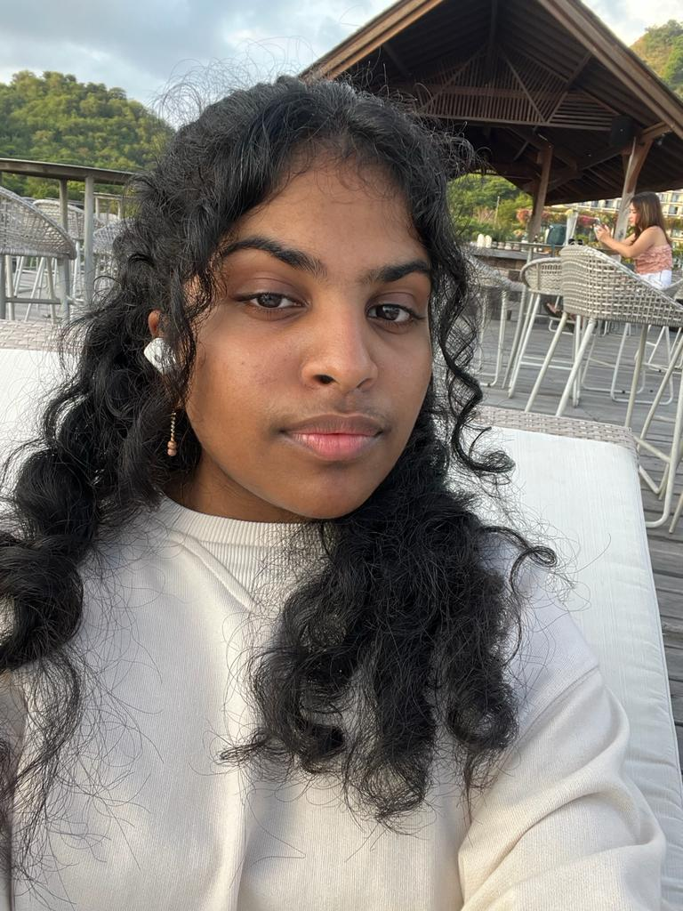

Padma Shree Kumaresan
 Born in India, Padma moved to Indonesia at a very young age, growing up in a different cultural environment was a huge challenge, especially having to interact and work together with people that were from a different culture. After moving through many schools, Padma joined The Gandhi Memorial Intercontinental School in Jakarta, Indonesia at the age of 9, where she continued to complete her high school and receive her IB Diploma.
It was during high school that Padma started exploring her various skills, especially communication and leadership skills. She was elected as deputy house captain for a sports house in her school. Apart from that, Padma worked for small clubs, which generally had a non-profit objective, through which she improved and explored many skills such as designing, team building, communicating, finance management, and social media marketing. At the end of the year, Padma received her IB Diploma with a score of 32.
Apart from her academics, Padma is quite fond of dance, especially Indian Classical Dance Bharatnatyam in which she had trained for 5+ years. Padma has a dream of starting her own dance academia alongside her friend someday. Padma also takes a great interest in music, being trained in guitar for 2 years, Padma also loves exploring different genres of music, hip-hop being her current favorite right now! Padma has also explored her creativity through art, as a self-taught artist, Padma is skilled in sketching, painting and digital art.
In September 2022, Padma enrolled in ESSEC Asia-Pacific located in Singapore for her Bachelor of Business Administration degree. With the opportunities to learn various modules like Marketing and Financial Accounting, Padma is looking forward to achieving greater skills at ESSEC.